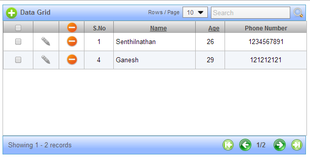

|
AJAX Data Grid
AJAX Data Grid is available with Nedil Widgets. But it's documentation with examples are yet to be added here. Watch out this space to get complete API explanation for AJAX Data Grids
This is just an image of the example. Complete example will be available soon
 | |
|
|
|
|